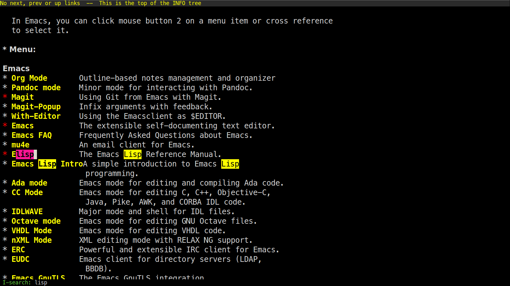

Tutorial introduction to searching in Emacs
Go to the main Info buffer with C-h i. Hit d to make sure you are
at the top-level of the Info documentation, and go at the beginning of
the buffer with M-<.
Perform an incremental search for “lisp” with C-s lisp.

Hit RET to deactivate the search and the highlighting of search
matches.
Hit C-r to search backwards.
Now hit C-s C-s to search for the last search string again.
Hit M-e to edit the search string. Delete “lisp” in the minibuffer
prompt, type “mode” and RET to reenter the search loop.

Hit M-p. Your cursor will be back in the minibuffer prompt and you
can hit M-p and M-n to cycle through previous search strings, and RET
to search the selected string again.
Go back to the beginning of the Info buffer with M-<.
Hit C-s to start the search.
Hit C-q C-j to search for the newline character.
C-q is used to insert C-j and RET literally: if you don’t use C-q,
typing C-j and RET in the search prompt will exit the prompt.
Hit C-g to abort the search.
Hit C-s and search for mail.
Notice that both “Mail” and “mail” will be matched: the search is not case sensitive.
Hit C-u C-SPC to go back to your position before your search.
While in the search loop, hit M-c (or M-s c) to toggle case
sensitivity: you will notice that now only “mail” is highlighted.
While in the search loop, hit M-s SPC to toggle “match spaces
loosely”: when matching spaces loosely, you can search for a string
like “mail client” (with three hard spaces) and still match the
“mail client” string.

Still in the search loop, M-s w will perform word-based searches. For
example, word-based search for “mail” will not match “email”.
Now try searching for maii instead of mail and then hit DEL to
edit the search string by deleting the last character.
Hit C-s and search again for “mail”.
Hit RET on the first occurrence and go one word backward with M-b.
Now hit C-s C-w to search for the word at point (it should be “mail”).
Try again with C-s C-w C-w to search for several words at point.
Hit C-s C-M-y to search for the character at point.
Hit C-M-y C-M-y to add the next two characters to the search string.
Hit C-M-w to remove the last character from the search string.
Exit the search with C-g.
Info buffers are read-only by default: hit M-d on a word to copy it.
In normal buffers, you would use C-M-SPC to mark the “sexp” under
cursor (here, the “sexp” is simply a word), then M-w to copy it
(i.e. to “add it to the kill-ring).
Now hit C-s again, then C-y to paste (i.e. “yank”) the text in the
search area.
Hit C-s C-M-i. This will displays a new window with a list of
possible completions for the current search string.

Hit M-< and C-s to search for “mail”.
Now hit M-s o to list lines where “mail” occurs.

Hit C-s and M-r (or M-s r) to switch to regular expression search.
Go to an org-mode buffer. Hit M-TAB to cycle through visibility
status and stop when in the OVERVIEW mode (everything is folded).
Search for hidden text: the matched string is automatically unfolded when the cursor moves to it.
Exit the search.
Still in this org-mode buffer, hit M-TAB to fold the subtrees and hit
C-s M-s i to search for visible text only. Invisible text won’t be
matched.
In any buffer, hit C-s C-h b to browse the search options.
Things I wish I knew sooner:
C-s M-eto edit the search stringC-s M-wto search for word at pointC-s M-rto toggle search by regular expressionsC-s M-s oto runoccuron the current search stringC-s C-M-ito complete the current search stringC-s a-test-string M-xto replace the matched string in the buffer
Enjoy, and check the Emacs manual for more.
And you, what are your Emacs search “ahah!” moment?
Thank martijntje for his suggestions.